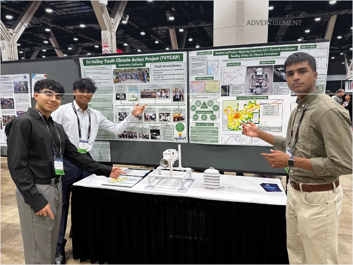
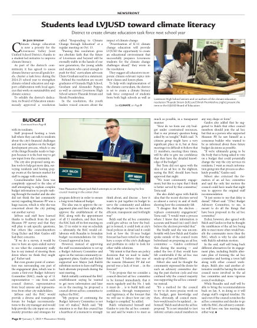
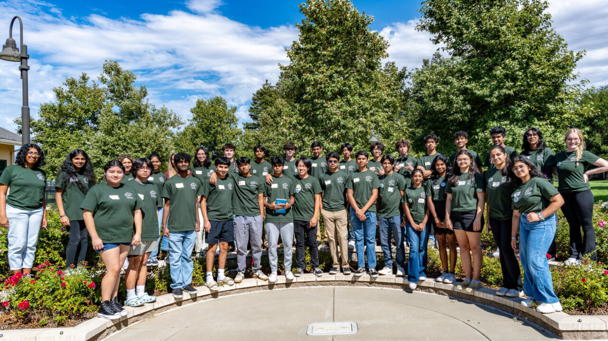
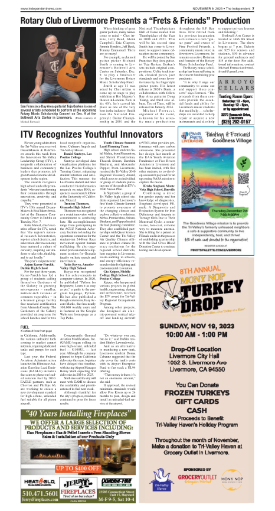
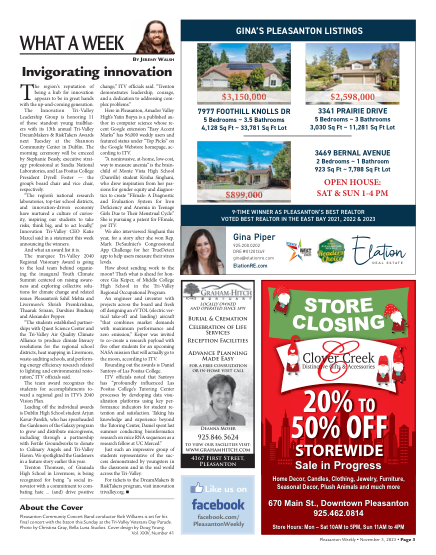
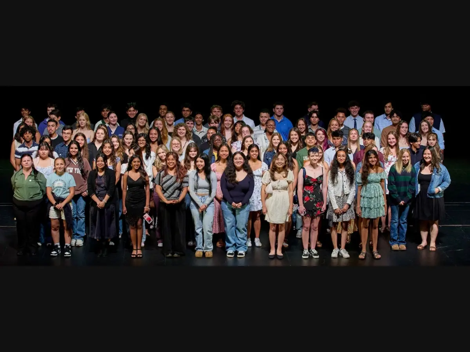
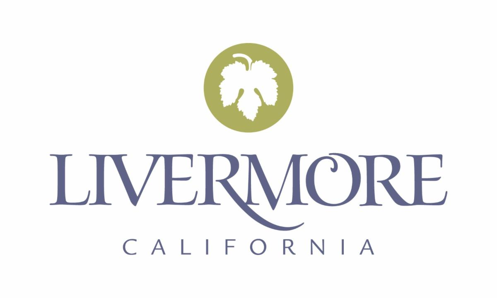

Livermore Students Found Tri-Valley Youth Climate Action Program
Michael Wittner profiles the climate-action program Shrish Premkrishna and I helped establish, from the youth summit to climate education in local schools.
A collection of stories about work I’ve been part of.
Much of this began with climate education in Livermore. These articles tell the story of a shared effort by students, mentors, and our community.

Michael Wittner profiles the climate-action program Shrish Premkrishna and I helped establish, from the youth summit to climate education in local schools.

Jude Strzemp reports on the student-led resolution and the district’s plans for a climate education task force. Print edition, page 8.

Coverage of the resolution developed by Claire Gresham, Alexander Pepper, Shrish Premkrishna, and me.

Hannah Craddick profiles the students behind the Livermore Youth Climate Summit and the climate-action work that followed.

Reporting on the DreamMakers & RiskTakers awards and our Youth Climate Summit planning team. Print edition, page 7.

Jeremy Walsh’s column on the DreamMakers & RiskTakers honorees, including our Youth Climate Summit planning team. Print edition.

Included in the foundation’s 2025 scholarship recipients.
The community announcement listing the 2025 scholarship recipients.
The joint announcement documents the student team’s work and our presentation to the Board of Education on October 15, 2024.
Our Youth Climate Summit planning team received the Tri-Valley 2040 Regional Visionary Award.

The city recognizes the GravitechX robotics team, including me, for its competition achievements.

Quest highlights Shrish Premkrishna and me in a climate-storytelling event hosted by Yale and Princeton. The video link starts at our segment.
Our climate-storytelling video, featured in the My Climate Story collection.
The climate-storytelling appearance is also listed on Quest Science Center’s coverage page. Articles remain on their publishers’ websites; some links open PDF editions.